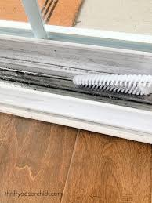
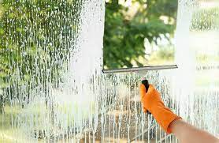

Want to get your home's windows cleaned professionally? We offer exceptional window cleaning services to residential and commercial buildings. We can get the job done right. We can meet all of your window cleaning needs for a home of any size or an office building. Now that you know that we clean any and all windows, how do we do it? Read on for on how we make your windows the cleanest, both inside and out, without streaks.
We start by removing dust from the window frame, tracks and sill with a vacuum, duster, brush, or a cloth. We do the same thing with your blinds or shades. If you have curtains, can we remove them and wash them, following the care instructions.
If you have screens, we will remove them and vacuum or brush them to get rid of dust. If you think they need a deeper clean we can wash them with a warm, sudsy mix, then rinse and allow them to dry completely.
Only after we have completed these steps we start to spray your windows with a generous amount of glass cleaner. Then, using a lint-free paper towel or microfiber cloth, wipe your windows from top to bottom and do the same thing again after putting on glass cleaner with a window squeegee. If we see any streaks, we give them another wipe until the glass is clear. For the outside, we wipe your windows and frames with a soft brush or disposable cloth to remove loose dirt and dust, and then repeat what we did inside.
Need a reliable and trustworthy cleaning service to maintain your home's cleanliness on a regular basis? Our long-term house cleaning services provide peace of mind and a comfortable living space.
Phone: (234)-746-6789
Email: tiddyTouch@gmail.com


Experience the convenience of a clean living space every single day! Our cleaning services are tailored to meet your specific needs and ensure that your home is always spotless. Say goodbye to clutter and hello to relaxation as our team of experts keeps your living environment well-maintained on a daily basis. No more worries about taking care of household chores yourself, we're here to handle it all for you! Choose us for a hassle-free, everyday cleaning experience.